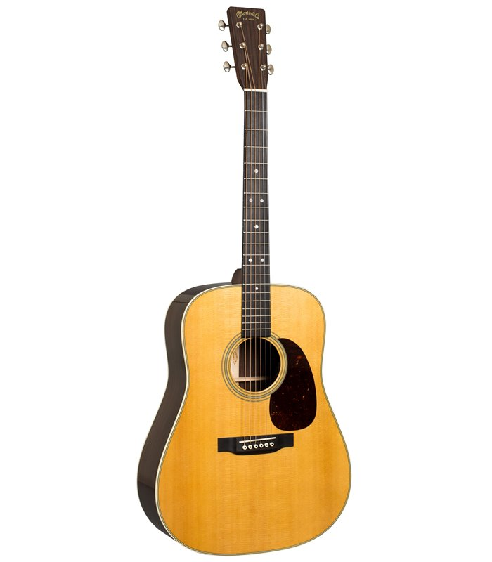

Welcome to gitara
Gitaros derinimas :: 6stygos.webnode.com
2020.10.30 03:306stygos.webnode.com
Pagrindinis Gitaros derinimas
Gitaros derinimas
30/12/2010 19:01Kad ir kaip mes norėtūme, gitara visą laiką suderinta nebus. Geriausia gitarą suderinti kas kiekviną grojimą. Žinoma jei gitara grojate kelis kartus per dieną, užtektų ją suderinti vieną kartą tą dieną, prieš pradedant groti. Ypač reikia atkreipti dėmesį į gitaros suderinimą grojant kartu su kitu instrumentu, jam pritariant, nes tada gitaros išsiderinimas bus juntamas stipriausiai. Pradedantieji gitaristai neiškart išgirsta gitaros išsiderinimą, bet kuo dažniau girdėsite gitaros skambesį, tuo "jautresni" būsite jos išsiderinimui.
Geresnės kokybės gitaros laikomos geromis sąlygomis išsiderina negreitai. Prastesnės kokybės gitaros laikomos nepalankiomis sąlygomis (svyruojanti oro temperatūra ir oro drėgmė) išsiderina net nekliudomos per vieną, dvi dienas. Gitara gana greitai išsiderina, jei ja grojant yra atliekami patempimai (bend'inimai).
Gitaros derinimo būdai
Aš išskirčiau du gitaros derinimo būdus:
"Iš klausos", tai yra, kai gitara derinama pagal kitą gerai suderintą instrumentą (pianiną arba kamertono šakutę). Naudojant specialius derintuvus, virtualius derintuvus.
Derinimas su derintuvu:
Pirmiausia aptarsiu gitaros derinimą naudojant derintuvus, nes tai paprasčiausias ir mažiausiai laiko bei kantrybės reikalaujantis būdas. Derintuvų rūšis galima būtų išskitdviejų rūšių. Elektroniniai derintuvai, kuriuos galima nusipirkti už 50lt-80lt beveik bet kurioje muzikos prekių parduotuvėje. Arba virtualūs derintuvai, tai yra kompiuterinės programos, kurioms reikia prijungti prie kompiuterio mikrofoną.
Naudojant tiek paprastą, tiek virtualų derintuvą dažniausiai galima nusistatyti derinimo būdą. Jei aplinkybės nereikalauja kitaip, gitara dažniausiai derinama standartinėje E tonacijoje.
Pats naudoju "Marshall MT-1" gitaros derintuvą:
Derinant gitarą tokiu derintuvu reikia jį padėti apytiksliai 20cm atstumu nuo gitaros (sėdėdamas pasidedu ant kelio) ir skambinant stygą stebėti ekranėlyje judančią rodyklę. Jei styga suderinta rodyklė turi atsidurti per vidurį ekranėlio, o virš ekranėlio turi degti TIK žalia lemputė. Jei rodyklė pakrypusi į kairę, stygą reikia tempti, jei į dešinę, atpalaiduoti. Kitų tipų derintuvuose gali būti tik ekranėlis, arba tik lemputės, teko susidurti ir su derintuvu, kuris apie stygos įtempimo padėtį pranešdavo lempučių pagalba, o stygą tinkamai suderinus pasigirsdavo pyptelėjimas. Mano naudojamas derintuvas, kaip ir daugelis kitų turi 6,3mm standartinį lizdą, kurio pagalba galima suderinti elektrinę gitarą.
Virtualų derintuvą galite atsisųsti skiltyje "Naudingos programos" arba paspaudę šią nuorodą AP Guitar Tuner 1.02.rar (192,4 kB) . Šis virtualus derintuvas atrodo taip:
Virtualiame, kaip ir paprastame derintuve yra rodyklė informuojanti apie stygos įtempimo padėtį, bei galima pasirinkti skirtingą derinimą. Šiuo metu nusatyta "Standart D", tai standartinė D tonacija. Žalias indikatorius informuoja apie skambėjimo garsumą. Kaip minėjau, naudojantis virtualiu derintuvu reikalingas mikrofonas (tiks ir paprastas mikrofonas, kuris būna kartu su ausinėmis, skirtomis intenetiniams pokalbiams ar pan.). Taigi, jei pajungus mikrofoną žalias idikatorius užkyla iki viršaus ir paraudonuoja, padidinkite atstumą tarp gitaros ir mikrofono, arba per garso valdiklio (Sound Manager) nustatymus sumažinkite mikrofono jautrumą.
Prie rodyklės esanti raidė parodo, kokią natą atitinka skambinama styga. Naudojant standartinę E tonaciją turi būti taip:
pirma styga-E,
antra-B,
trečia-G,
ketvirta-D,
penkta-A,
šešta-E.
Jei skambinant antrą stygą rodo "E" jums reikia tą stygą tempti kol užsidegs "B", o tada jau taikyti, kad rodyklė atsidurtų per vidurį. Analogiškai ir su kitomis stygomis.
Derinimas "iš klausos":
Derinant iš klausos (atsiprašau kalbininkų :) ) svarbiausia taisyklingai suderinti pirmą stygą. Norint tai padaryti reikalingas instrumentas, kurį galėtume naudoti kaip pavyzdį, atramos tašką. Puikiai tinka pianinas arba kamertono šakutė.
Taigi pradedame derinti. Pirmiausia švariai užspaudžiame pirmą stygą ties penktu skirsniu, o tada skambiname pianino LA natą, arba užgauname kamertono šakutę (ji taip pat skamba ties LA nata) ir deriname stygą tol, kol ji skambės taip, kaip grojama nata kitu "pagrindiniu" instrumentu. Pirmos stygos derinimas pats atsakingiausias, kadangi pagal ją vėliau bus derinamos ir kitos stygos.
Yra ir kitas pirmos stygos derinimo būdas. Galima skambinti pianinu MI natą ir derinti gitaros pirmą stygą neužspaustą (kadangi Mi=E). Toliau viskas atliekama kaip ir pirmu būdu, styga tol derimama, kol skambės taip, kaip "pagrindinis" instrumentas.
Tarkime pirma styga suderinta. Toliau užspaudžiame antrą stygą penktame skirsnyje ir deriname ją tol, kol skambės lygiai taip pat, kaip pirma styga laisva.
Tada trečią stygą užspaudžiame ketvirtame skirsnyje ir deriname, kol ji skambės kaip antra laisva.
Ketvirtą stygą užspaudžiame penktame skirsnyje ir deriname kol ji sutaps su trečia laisva.
Penktą stygą užspaudžiame penktame skirsnyje ir deriname kol sutaps su ketvirta laisva.
Šeštą stygą užspaudžiame penktame skirsnyje ir deriname kol sutaps su penkta laisva.
Septintą stygą užspaudžiame penk...... Pala, septintos nebėra..... Vadinasi VUOLA! Gitara suderinta! :)
Apibendriname:
1 styga - užspausta 5 skirsnyje skamba kaip kito instrumento LA nata arba atvira skamba kaip kito instrumenti MI nata
2 styga - užspausta 5 skirsnyje skamba kaip pirma atvira
3 styga - užspausta 4 skirsnyje skamba kaip antra atvira
4 styga - užspausta 5 skirsnyje skamba kaip trečia atvira
5 styga - užspausta 5 skirsnyje skamba kaip ketvirta atvira
6 styga - užspausta 5 skirsnyje skamba kaip penkta atvira
Ką galiu pasakyti apie derinimą pagal klausą, tai turiu pripažinti, kad tai gana sudėtingas derinimas, nes reikia turėti gerą muzikinę klausą. Jei girdi ką tėvai šnabžda kitame kambaryje, vadinasi turi gerą klausą, bet tai nebūtinai reiškia, kad turi gerą muzikine klausą. Pats pagal klausą tik nebent truputį pakoreguoju vieną "nugrybavusią" stygą, bet niekada nederinau visos gitaros pasitelkdamas vien tik klausą. Bet kiekvienam skirtingai, juk yra žmonių, kurie išgirdę garsą pagal klausą gali pasakyti, kokia tai nata, manau jiems ir gitaros derinimas pagal klausą sunkumų nesukels. Taigi rinkitės patys. ;)
Straipsnį parašė Ričardas
Tags :
gitaros derinimas | kaip suderinti gitara | derintuvas | tiuneris
Back Tabulatūros archyvas Gitaros pamokos Forumas Kūriniai Naudingi siuntiniai Įdomūs straipsniaiHomepage | Site map | RSS | Print
6stygos.webnode.com © 2010-2012 Informaciją kopijuoti draudžiama! Make a free website Webnode Webnode, an innovative sitebuilderHave a captivating website for free! Get started
